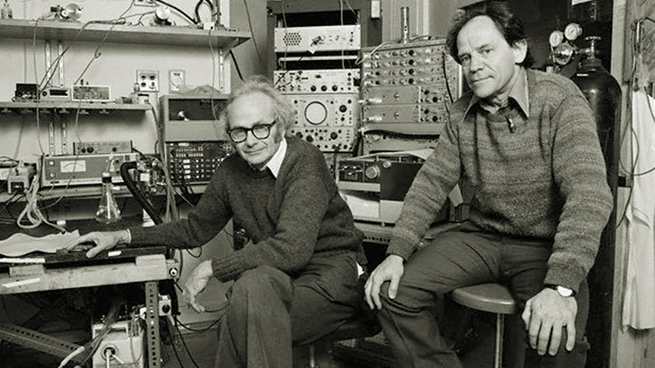
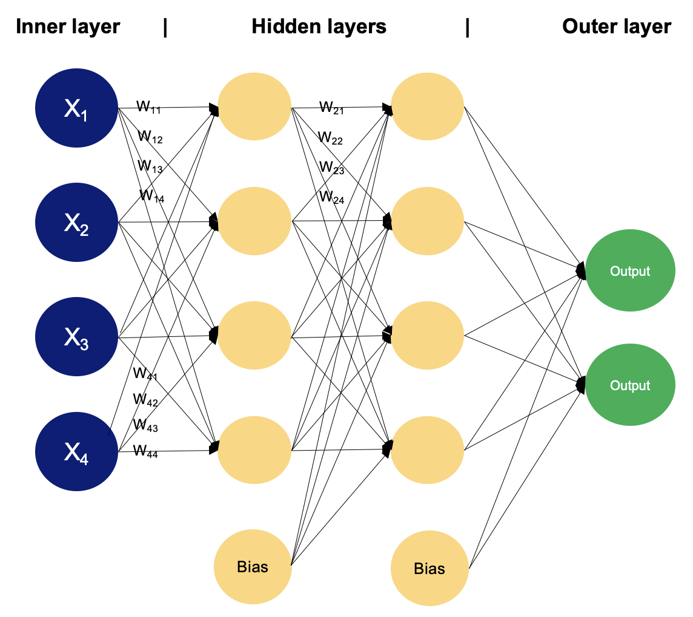
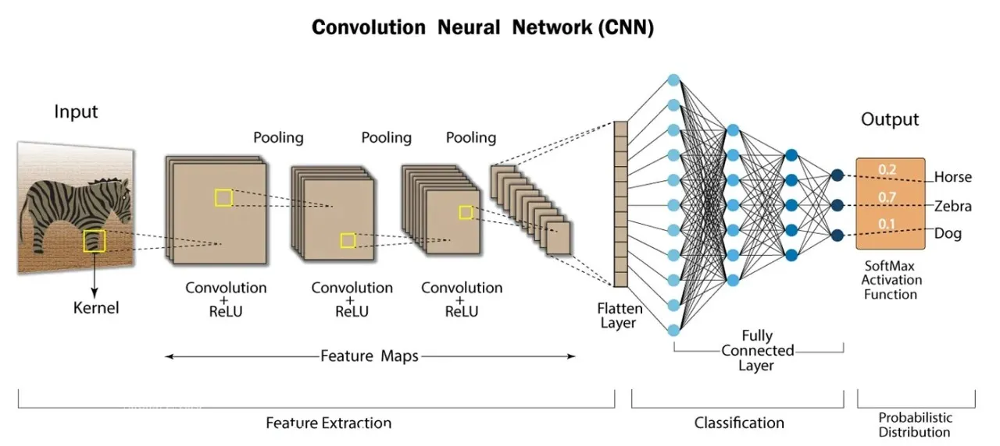
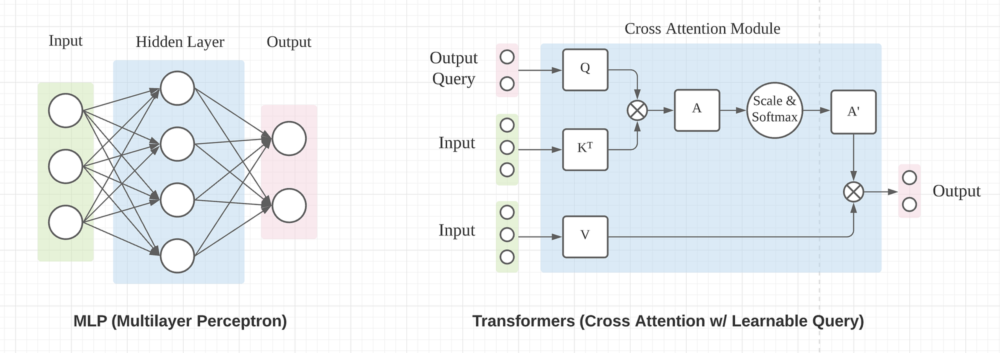
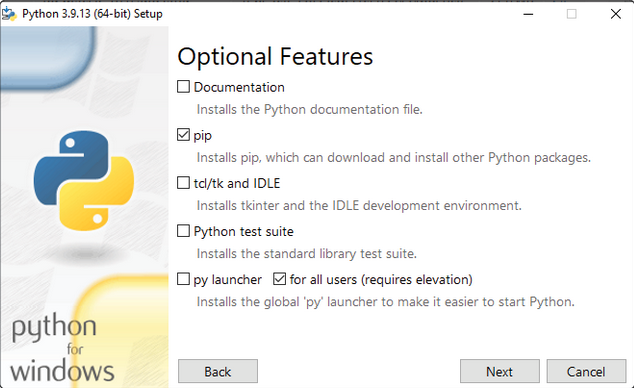

2.5 Machine Learning
El Machine Learning (aprenentatge automàtic) és una branca de la intel·ligència artificial que se centra en el desenvolupament d'algorismes i models que permeten als ordinadors aprendre a partir de dades i millorar el seu rendiment en tasques específiques sense ser explícitament programats per a cada tasca.
Història del Machine Learning
Tot va començar als anys 50 quan els investigadors Hubel i Wiesel van descobrir com les neurones del cervell responen a estímuls visuals.

Van connectar electrodes al cervell de gats i van observar que certes neurones s'activaven quan es mostraven línies verticals, horitzontals i diagonals. Van descobrir que aquestes neurones estaven organitzades en capes i que cada capa processava diferents aspectes de la informació visual.

Aquesta descoberta va inspirar la idea de crear xarxes neuronals artificials que imiten el funcionament del cervell humà.
Evolució històrica
- 1950s-1960s: Desenvolupament dels primers models de xarxes neuronals artificials, com el perceptró multicapa (MLP).

- 1989-1998: Naixement de les xarxes neuronals convolucionals (CNNs) per a la visió per computador.

- 2012: Avanços en deep learning amb xarxes neuronals profundes. La diferència entre MLP i Deep Learning es troba en la profunditat i complexitat de les xarxes neuronals utilitzades: els MLP tenien 2-3 capes ocultes mentres que les xarxes de Deep Learning poden tenir desenes o centenars de capes ocultes.
- 2014: Introducció de les xarxes generatives adversàries (GANs). També s'aplica aprenentatge per reforç junt amb Deep Learning per a tasques com jugar a videojocs.
- 2017: Desenvolupament dels transformers per al processament del llenguatge natural (NLP). Comença l'era dels grans models de llenguatge (LLMs) com GPT.

Unity ML-Agents i PyTorch
Per a implementar Machine Learning en videojocs, una de les eines més utilitzades és Unity ML-Agents, un kit de desenvolupament que permet als desenvolupadors integrar agents d'aprenentatge automàtic en els seus jocs creats amb Unity.
PyTorch és una biblioteca de Python de codi obert per a l'aprenentatge automàtic que proporciona una plataforma flexible i eficient per a la creació i entrenament de models de Machine Learning. És àmpliament utilitzada en la investigació i desenvolupament de models d'aprenentatge profund.
Instal·lació de PyTorch
Abans d'instal·lar PyTorch, has d'instal·lar Python:

Durant el procés d'instal·lació, assegurat d'instalar pip, el gestor de paquets de Python, i de marcar l'opció d'instal·lar Python per a tots els usuaris.


Per a comprovar que Python i pip s'han instal·lat correctament, obre una terminal (CMD o PowerShell a Windows) i escriu:
1 2 | |
pip
pip és el gestor de paquets de Python que permet instal·lar i gestionar biblioteques i dependències addicionals que no formen part de la biblioteca estàndard de Python.
El següent pas és la creació d'un entorn virtual per a aïllar les dependències del projecte. Per tal de gestionar millor els entorns virtuals, usarem Conda. Instal·la Anaconda des de la seva pàgina oficial.
Obre un terminal d'Anaconda i crea un entorn virtual amb el següent comandament:
1 | |
Cada vegada que vullgues treballar en aquest entorn, hauràs d'activar-lo amb:
1 | |
Amb l'entorn virtual activat, instal·la ML-Agents amb el següent comandament:
1 | |
Això també instal·larà totes les dependències necessàries, incloent PyTorch.
A continuació, instal·la les següents dependències addicionals que són requerides per ML-Agents:
1 2 3 | |
Atenció
Assegura't d'instal·lar les versions específiques indicades per evitar problemes de compatibilitat.
Per a verificar que la instal·lació s'ha realitzat correctament, pots executar el següent comandament per a comprovar la versió de ML-Agents:
1 | |
Teorìa bàsica de Unity ML-Agents
ML-Agents utilitza diversos conceptes clau per a implementar agents d'aprenentatge automàtic en jocs. La idea principal és la creació de comportaments intel·ligents mitjançant l'ús d'agents que aprenen a través de l'experiència.
- Comportament (Behavior): Defineix com un agent ha de comportar-se en l'entorn. Pot ser controlat per un model d'aprenentatge automàtic o per una funció heurística (programada manualment). Segons el tipus de comportament (Behavior Type), aquest pot ser:
- Per defecte (Default): És quan volem entrenar el model d'aprenentatge automàtic. L'agent utilitza el model per a prendre decisions basades en recompenses i penalitzacions.
- Heuristic Only: L'agent utilitza una funció heurística definida per l'usuari per a prendre decisions.
- Inference Only: L'agent utilitza un model preentrenat per a prendre decisions, sense possibilitat d'entrenament addicional.
- Agent (Agent): És l'entitat que pren decisions i interactua amb l'entorn. Pot percebre l'entorn a través d'observacions i prendre accions basades en aquestes observacions.
- Observacions (Observations): Són les dades que l'agent rep de l'entorn. Poden ser imatges, valors numèrics, distàncies, col·lisions o altres tipus d'informació que representen l'estat actual de l'entorn.
- Accions (Actions): Són les decisions que l'agent pren en resposta a les observacions. Poden ser accions discretes (com moure's a l'esquerra o dreta) o accions contínues (com ajustar la velocitat o la direcció).
- Recompenses (Rewards): Són els senyals que l'agent rep després de prendre una acció. Les recompenses poden ser positives (per a reforçar un comportament desitjat) o negatives (per a penalitzar un comportament no desitjat). L'objectiu de l'agent és maximitzar la suma total de recompenses al llarg del temps.
- Episodis (Episodes): Són seqüències d'interaccions entre l'agent i l'entorn que tenen un principi i un final. Un episodi comença quan l'agent inicia una tasca i acaba quan es compleix un objectiu o es produeix una condició de finalització (com col·lisionar amb un obstacle).
Creació del projecte a Unity
Obre Unity Hub i crea un nou projecte 3D.
Afegeix el paquet ML-Agents al projecte mitjançant el Package Manager. Afegeix també ProBuilder per a fer l'escenari.
Per a construir l'escenari, fes un pla senzill i delimita'l amb 4 parets. Afegeix una càpsula que serà l'agent que aprendrà a moure's per l'escenari, una altra càpsula que serà l'objectiu i un cub que serà un obstacle.

Les parets han de tindre un Mesh Collider. L'agent i l'objectiu han de tindre un CapsuleCollider. L'obstacle ha de tindre un BoxCollider. Marquem tots els colliders com a Is Trigger.
Afegim un component Rigidbody a l'agent i desmarquem l'opció Use Gravity per a que no caiga.
Creació de l'script de l'agent
Agrega un script a l'agent anomenat MoveToTargetAgent. Elimina el mètode Update() i afegeix la directiva using per a ML-Agents. També fem que herete de de Agent:
1 2 3 4 5 6 7 | |
En afegir el script, Unity afegeix automàticament el component Behavior Parameters a l'agent.
Crea, dins de la classe MoveToTargetAgent, els següent mètode:
1 2 3 4 5 6 7 | |
També hem d'importar el namespace Unity.MLAgents.Actuators per a poder utilitzar ActionBuffers:
1 | |
Aquest mètode es cridarà cada vegada que l'agent decidisca fer una acció. Els valors moveX i moveZ es reben des del model d'aprenentatge automàtic i s'utilitzen per a moure l'agent en l'escenari.
El moviment es realitza modificant la posició local de l'agent en funció dels valors rebuts i d'una velocitat de moviment definida. No s'utilitza la posició global ja que si l'agent aprén en un entorn i després es vol utilitzar en un altre, alguns element poden canviar, mentres que la posició local respecte a l'agent es manté.
En l'inspector de Unity, en el component Behavior Parameters, estableix Continuous Actions a 2 i Discrete Branches a 0.
Info
- Continuous Actions: Accions que poden prendre qualsevol valor dins d'un rang continu.
- Discrete Branches: Accions que només poden prendre valors específics i limitats.
Observacions de l'agent
Les observacions són la manera en què l'agent percep el seu entorn. Són necessàries per a que l'agent puga prendre decisions informades sobre les accions a realitzar. En realitat, l'agent no observa l'escenari , sinó que rep dades numèriques que representen diferents aspectes de l'entorn.
En aquest cas, volem que l'agent observe la seva pròpia posició (x, y, z) i la posició de l'objectiu (x, y, z). Per tant necessitem 6 observacions en total. Ajustem aquest valor en l'inspector de Unity, en el component Behavior Parameters, establint Space Size a 6.
Agreguem a la classe MoveToTargetAgent el següent mètode per a recollir les observacions:
1 2 3 4 5 6 7 8 9 10 11 12 13 14 | |
A l'inspector, afegim una referència al transform de l'objectiu per a poder accedir a la seua posició.
Col·lisions i recompenses
Per a detectar les col·lisions amb l'objectiu, l'obstacle i les parets, utilitzarem el mètode OnTriggerEnter.
Abans, creem els tags Objective, Obstacle i Wall i els assignem als objectes corresponents en l'escenari.
A continuació, afegim el mètode a la classe MoveToTargetAgent:
1 2 3 4 5 6 7 8 9 10 11 12 13 14 15 16 | |
Les recompenses i penalitzacions s'assignen en funció de l'objecte amb el qual l'agent col·lisiona:
- Objectiu: Recompensa de +10 punts i finalització de l'episodi.
- Obstacle: Penalització de -2 punts i finalització de l'episodi.
- Paret: Penalització de -5 punts i finalització de l'episodi.
L'entrenament de l'agent es realitza en episodis, que són seqüències d'accions i observacions. Quan l'agent aconsegueix l'objectiu o col·lisiona amb un obstacle o paret, l'episodi finalitza i es reinicia. Amb aquest sistema, l'agent aprèn a optimitzar les seves accions per maximitzar les recompenses i minimitzar les penalitzacions al llarg de múltiples episodis.
Episodis
Per a reiniciar l'escenari després de cada episodi, afegim el següent mètode a la classe MoveToTargetAgent:
1 2 3 4 5 6 7 8 9 10 11 12 13 14 15 16 17 18 19 20 21 22 23 24 25 | |
Aquest mètode es crida cada vegada que comença un nou episodi. Aquí, es reinicien les posicions de l'agent i de l'objectiu a ubicacions aleatòries dins d'un rang especificat, a partir de les posicions inicials. Així, l'agent té l'oportunitat d'aprendre a moure's cap a l'objectiu des de diferents punts de partida en cada episodi.
Decisions
El Decision Requester és un component que sol·licita decisions al model de IA en intervals regulars i li comunica a l'agent quan ha de prendre una nova acció.
En l'agent, afegim el component Decision Requester. Deixem els valors per defecte.
Després, en Behavior Parameters, establim el Behavior Type a Heuristic Only. Això permetrà provar l'agent utilitzant una funció heurística, en aquest cas manual, abans d'entrenar-lo amb Machine Learning.
Valors de Behavior Type
- Default: L'agent utilitza el model d'aprenentatge automàtic per a prendre decisions. Aquest és l'opció per defecte quan s'entrena un agent.
- Heuristic Only: L'agent utilitza una funció heurística definida per l'usuari per a prendre decisions.
- Inference Only: L'agent utilitza un model preentrenat per a prendre decisions, sense possibilitat d'entrenament addicional.
A l'script MoveToTargetAgent, afegim el següent mètode per a definir la funció heurística:
1 2 3 4 5 6 | |
Aquesta funció heurística permet controlar l'agent manualment per a provar que l'entorn funciona correctament. ContinuousActionsOut és un array que conté les accions contínues que l'agent pot prendre. En aquest cas, s'estan assignant els valors dels eixos horitzontal i vertical del teclat (tecles de fletxa o WASD) a les accions de moviment de l'agent.
Indicador visual d'èxit i fracàs
Per a tenir un indicador visual de quan l'agent aconsegueix l'objectiu o col·lisiona amb un obstacle o paret, podem canviar el color del pla cada vegada que es rep una recompensa o penalització. Si la recompensa és positiva, el pla es tornarà verd, i si és negativa, es tornarà roig.
Crea 2 materials nous anomenats SuccessMaterial i FailureMaterial. Assigna el color verd al primer i el color roig al segon.
Afegeix una referència als materials en l'script MoveToTargetAgent. Afegeix també una referència al pla:
1 2 3 | |
Modifica el mètode OnTriggerEnter per a canviar el material del pla segons la recompensa o penalització rebuda:
1 2 3 4 5 6 7 8 9 10 11 12 13 14 15 16 17 18 19 | |
Comprova que tot funciona correctament executant l'escena i movent l'agent fins que toque l'objectiu o col·lisione amb un obstacle o paret.
Entrenament de l'agent
Per a començar a entrenar l'agent, primer hem de canviar el Behavior Type en el component Behavior Parameters de l'agent a Default.
Entrem a la carpeta del projecte i obrim un terminal.
En el terminal, activar l'entorn virtual creat anteriorment:
1 | |
A continuació, llancem el procés d'entrenament amb el següent comandament:
1 | |
Apareixerà el missatge Listening on port 5004. Start training by pressing the Play button in the Unity Editor. Ara, torna a Unity i executa l'escena. Unity es connectarà amb el procés d'entrenament i començarà a entrenar l'agent.
Per a que l'entrenament siga més ràpid, hem de crear varis entorns per a que s'executen al mateix temps. Crrem un prefab de l'entorn (escenari, agents, objectius i obstacles) i dupliquem el prefab varies vegades en l'escena fins atindre 9 entorns. Col·loca la càmera de manera que es visualitzen tots els entorns.
Tornem a executar l'entrenament. Ara l'entrenament serà molt més ràpid.
Important
Has de ficar un nom diferent per a cada sessió d'entrenament en el paràmetre --run-id.
El deixem uns minuts fins que el la recompensa mitjana (Mean reward) estiga a prop del 10.00. Aleshores parem l'entrenament.
Podem visualitzar l'evolució de l'entrenament amb TensorBoard. En el terminal, escrivim:
1 | |
i podrem veure les gràfiques en el navegador web obrint l'adreça http://localhost:6006/.
Inferència amb el model entrenat
Una vegada l'agent està entrenat, podem utilitzar el model generat per a que l'agent prenga decisions basant-se en el que ha après durant l'entrenament.
Els models entrenats es guarden en la carpeta results dins de la carpeta del projecte. El fitxer tindrà un nom similar a My Behavior.onnx, i estarà en una carpeta amb el nom del run-id utilitzat durant l'entrenament.
Copiem el model a la carpeta Assets del projecte de Unity.
En l'inspector de Unity, en el component Behavior Parameters de l'agent, canviem el Behavior Type a Inference Only i seleccionem el model copiat en el camp Model.
Ara, si posem en marxa l'escena, l'agent utilitzarà el model entrenat per a prendre decisions i moure's cap a l'objectiu evitant els obstacles i parets.